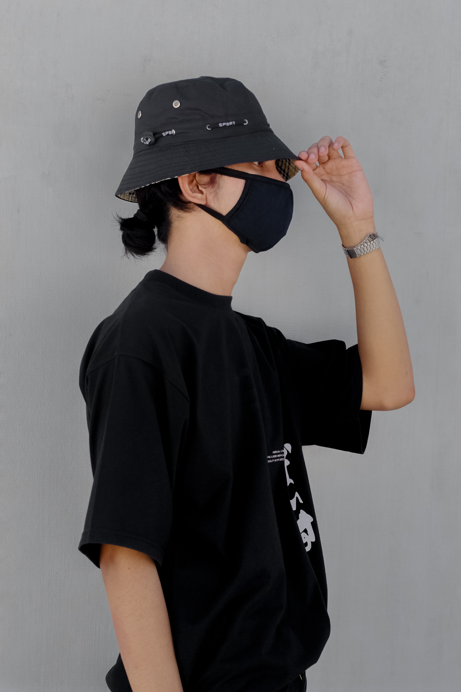

|

|
Hello Friends,
In my twenty years of existence, i learned a lot of things. My mother told me that in order to succeed, we must first embodied with such values.Life is beautiful but not always easy, it has problems too, and the challenge lies in facing them with courage, letting the beauty of life act like a balm, which makes the pain bearable, during trying times, by providing hope
Happiness, sorrow, victory, defeat, day-night are the two sides of the me coin. Similarly life is full of moments of joy, pleasure, success and comfort punctuated by misery, defeat, failures and problems. There is no human being on Earth, strong, powerful, wise or rich, who has not experienced, struggle, suffering or failure.
No doubt, life is beautiful and every moment – a celebration of being alive, but one should be always ready to face adversity and challenges. A person who has not encountered difficulties in life can never achieve success.
Difficulties test the courage, patience, perseverance and true character of a human being. Adversity and hardships make a person strong and ready to face the challenges of life with equanimity. There is no doubt that there can be no gain without pain. It is only when one toils and sweats it out that success is nourished and sustained.
Thus, life is and should not be just a bed of roses; thorns are also a part of it and should be accepted by us just as we accept the beautiful side of life.
The thorns remind one of how success and happiness can be evasive and thus not to feel disappointed and disheartened rather remember that the pain of thorns is short-lived, and the beauty of life would soon overcome the prick of thorns.
|